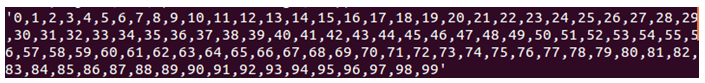
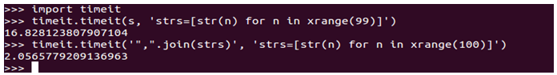
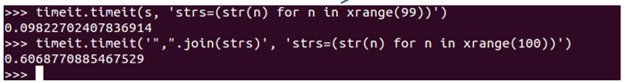
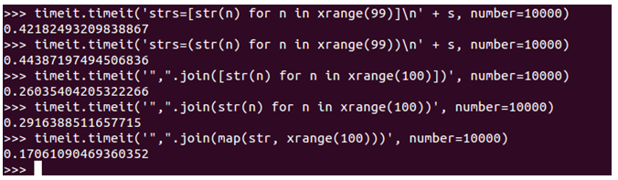
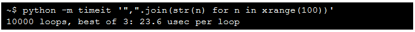
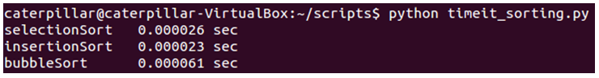
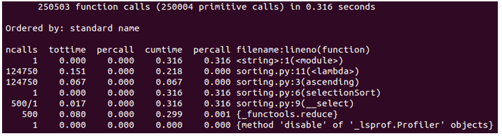
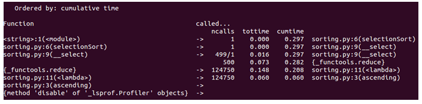

效能評測是我們要談的最後一個主題了，這是個很大的議題，嗯 ... 應該說，這六堂課每一個主題，都可以是個很大的議題，雖然課程接近尾聲了，但別忘了，這只是個簡短的生態之旅！
拉回來效能評測這個主題，就 Python 內建模組來說，我們要介紹的有：
timeit用來量測一個小程式片段的執行時間。cProfile用來收集程式執行時的一些時間數據，提供各種統計數據，對大多數的使用者來說是不錯的工具，這是用 C 撰寫的擴充模組。profile介面上彷造了cProfile，不過是用純 Python 來實現的模組，因此有較高的互通性；cProfile在評測時有較低的額外成本，不過並不是所有系統上都有提供。
timeit 的介紹 ...
timeit 模組
在介紹 timeit 之前，來看一個情境，你會怎麼撰寫程式來產生以下執行結果呢？ 
以下的程式，因為使用了
+ 進行串接，所以會比較慢嗎？
all = ''
for str in strs: # strs 是 ['0', '1', '2', '3', ..., '98']
all = all + str + ','
all = all + '99'也許你聽過一種說法，對
list 使用 join 會比較快？
','.join(strs) # strs 是 ['0', '1', '2', '3', ..., '99']傳說拔到獅子的鬃毛，程式就會自己生出來嘞！別再相信沒有根據的說法了，試試
timeit！ 來看看喔！如果有個
s 字串是這樣定義的：
s = '''
all = ''
for str in strs:
all = all + str + ','
all = all + '99'
'''那麼，以下的
timeit 測試，似乎證明了 + 串接字串一定比較慢，而使用 join 一定比較快： 
timeittimeit 在材料準備好之後，就會運行第一個參數指定的程式片段並量測時間，單位是秒！嗯！就結果看來，join 勝出！ 不過，以下卻是相反的結果：

差別在哪呢？在準備
strs 時，兩個都將 [] 改成了 () 罷了！這邊的重點並不在探討哪個快慢，只是想表示兩個觀念：
- 效能是程式結合後的整體考量，不是單一概念
- 效能不是用猜的，要有實際的評測作為依據
timeit 預設是執行程式片段 1,000,000 次，然後取平均時間，以下是幾個直接透過 API 運行的範例： 
也可以透過命令列的指令來執行評測：

一個更實際的例子，可以在 Lab 檔案的 demos/timeit 中找到，這是一個評測排序的範例：
import timeit
repeats = 1000
for f in ('selectionSort', 'insertionSort', 'bubbleSort'):
t = timeit.Timer('{0}([10, 9, 1, 2, 5, 3, 8, 7])'.format(f),
'from sorting import selectionSort, insertionSort, bubbleSort')
sec = t.timeit(repeats) / repeats
print '{f}\t{sec:.6f} sec'.format(**locals())以下是執行的結果：

cProfile（profile）
cProfile 提供有關程式運行時更多的統計資訊，你要有一個主要的進入點。例如：
import cProfile
import sorting
import random
l = range(500)
random.shuffle(l)
cProfile.run('sorting.selectionSort(l)')以下是個執行後的統計資訊：

這當中有許多欄位需要解釋一下：
- ncalls - "number of calls" 的縮寫，也就是對特定函式的呼叫次數。
- tottime - "total time" 的縮寫，花費在函式上的執行時間（不包括子函數呼叫的時間）。
- percall - tottime / ncalls 的結果。
- cumtime - "cumulative time" 的縮寫，花費在函式與所有子函式的時間（從呼叫至離開）。
- percall - cumtime / ncalls 的結果。
- filename:lineno(function) - 提供程式碼執行時的位置資訊。
使用 pstats
你可以使用 pstats 對 cProfile 的結果，進行各種運算與排序，可以先將 cProfile 收集的結果，儲存為一個檔案：
cProfile.run('sorting.selectionSort(l)', 'select_stats')然後，可以如下使用
pstats 載入檔案，並進行排序等運算：
import pstats
p = pstats.Stats('select_stats')
p.strip_dirs().sort_stats('name').print_stats()
p.sort_stats('cumulative').print_stats(10)
p.sort_stats('time').print_stats(10)一個執行結果如下：

你可以直接使用
cProfile 模組將另一個模組載入執行，例如：
python -m cProfile myscript.py或者是：
cProfile.py [-o output_file] [-s sort_order]如果想使用圖形化方式，來看看評測結果，可以試試 RunSnakeRun。
關於 PyCon Taiwan
終於，本課程到了尾聲了 ... 最後我們來認識一下 PyCon Taiwan！PyCon 是全球 Python 同好自發籌辦的年會活動，從 2012 年起，台灣也有自己的 Python 年會。PyCon Taiwan 聚集各領域應用 Python 的組織與個人，分享最新的技術發展，交流 Python 禪學的文化體驗。台灣 Python 年會期許成為創造價值、提昇技術的園地。
這門課程實際施行於 PyCon Taiwan 2013，而寫完中文版整理時，正值 PyCon APAC 2014 籌辦之時，PyCon APAC 第一到第三屆是在新加坡舉辦，第四屆是在日本。
第五屆是 PyCon APAC 2014，選定在台灣舉辦，預計時間是 2014 年 5 月 17、18 兩日，地點在台北，相關資訊可以在 PyCon APAC 2014 網站查詢。
過往兩屆的 PyCon Taiwan 資訊，則可以在以下取得： 如果你需要這個系列文件的電子書版本，你可以在 Google Play 或 Pubu 上購買。
參考資料
- 測試
- 評測
- PyCon Taiwan